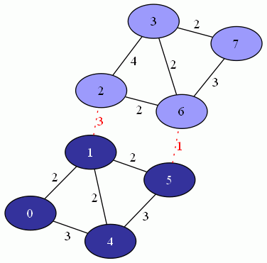

|  |
template <class UndirectedGraph, class WeightMap, class P, class T, class R>
weight_type
stoer_wagner_min_cut(const UndirectedGraph& g, WeightMap weights,
const bgl_named_params<P, T, R>& params = all defaults);
The stoer_wagner_min_cut function determines a min-cut and the min-cut weight of a connected, undirected graph.
A cut of a graph G is a partition of the vertices into two, non-empty sets. The weight of such a partition is the number of edges between the two sets if G is unweighted, or the sum of the weights of all edges between the two sets if G is weighted. A min-cut is a cut having the least weight.
Sometimes a graph has multiple min-cuts, but all have the same weight. The stoer_wagner_min_cut function determines exactly one of the min-cuts as well as its weight.
boost/graph/stoer_wagner_min_cut.hpp
IN: const UndirectedGraph& g
A connected, undirected graph. The graph type must be a model of Vertex List Graph and Incidence Graph.
IN: WeightMap weights
The weight or length of each edge in the graph. The WeightMap type must be a model of Readable Property Map and its value type must be Less Than Comparable and summable. The key type of this map needs to be the graph's edge descriptor type.
OUT: parity_map(ParityMap parities)
The algorithm computes a min-cut, which divides the set of vertices into two, non-empty sets. The stoer_wagner_min_cut function records which of the two sets that each vertex belongs to by setting the parity to true (representing one set) or false (for the other). ParityMap must be a model of a Writable Property Map and its value type should be a bool type. The key type must be the graph's vertex descriptor type.
Default: boost::dummy_property_map
IN: vertex_index_map(VertexIndexMap vertexIndices)
This maps each vertex to an integer in the range [0, num_vertices(g)). This is only necessary if the default is used for the assignment, index-in-heap, or distance maps. VertexIndexMap must be a model of Readable Property Map. The value type of the map must be an integer type. The key type must be the graph's vertex descriptor type.
Default: get(boost::vertex_index, g)
UTIL: assignment_map(AssignmentMap assignments)
AssignmentMap must be a model of Read/Write Property Map. The key and value types must be the graph's vertex descriptor type.
Default: A boost::iterator_property_map using a std::vector of num_vertices(g) vertex descriptors and vertexIndices for the index map.
UTIL: max_priority_queue(MaxPriorityQueue& pq)
MaxPriorityQueue must be a model of Keyed Updatable Queue and a max-Updatable Priority Queue. The value type must be the graph's vertex descriptor and the key type must be the weight type. Default: A boost::d_ary_heap_indirect using a default index-in-heap and distance map.
UTIL: index_in_heap_map(IndexInHeapMap indicesInHeap)
This parameter only has an effect when the default max-priority queue is used.
IndexInHeapMap must be a model of Read/Write Property Map. The key type must be the graph's vertex descriptor type. The value type must be a size type (typename std::vector<vertex_descriptor>::size_type).
Default: A boost::iterator_property_map using a std::vector of num_vertices(g) size type objects and vertexIndices for the index map.
UTIL: distance_map(DistanceMap wAs)
This parameter only has an effect when the default max-priority queue is used.
DistanceMap must be a model of Read/Write Property Map. The key type must be the graph's vertex descriptor type. The value type must be the weight type (typename boost::property_traits<WeightMap>::value_type).
Default: A boost::iterator_property_map using a std::vector of num_vertices(g) weight type objects and vertexIndices for the index map.
The weight of the min-cut
bad_graph
If num_vertices(g) is less than 2
std::invalid_argument
If a max-priority queue is given as an argument and it is not empty
The time complexity is O(V·E + V2 log V).
The file examples/stoer_wagner.cpp contains an example of calculating a min-cut of a weighted, undirected graph and its min-cut weight.
The minimum cut algorithm of Stoer and Wagner.
A simple min-cut algorithm. Journal of the ACM 44 (4), 585–591.
Global minimum cuts.
| Copyright © 2010 | Daniel Trebbien (dtrebbien@gmail.com) |